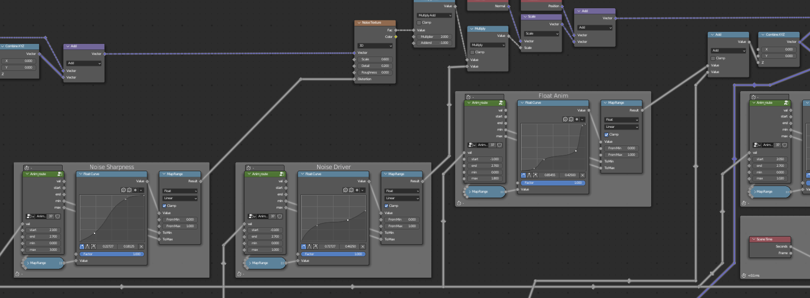
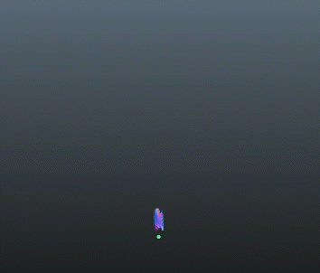

Do Witchcraft is a personal project exploring SDFs, bezier curves, animation curves,
procedural geometry, timing, and of course magic. The concept behind the magic spells is taken from "The Owl House"
animation series by Dana Terrace and produced by Disney Television Animation.
Each card contains a glyph/symbol on them responsible for performing a spell,
with four base symbols for: light, ice, plant, and fire magic.
These effects are created entirely procedurally from modeling to animation to texturing.
Breakdown
As with all my projects, I've included a detailed breakdown behind the making of this animation.
This writeup is a collection of design choices, technical methods, code, concept images, mathmatical notes and designs, and everything inbetween.
At the bottom is a new section on rendering workflow - describing what went wrong in early renders and how iterations built up the final animation here.
If you, as a reader, have any questions about the process or content here then please don't hesitate to ask.
VFX Storyboards
1
2
3
4
Storyboard/ Notes for Light Spell
Storyboard/ Notes for Ice Spell
Storyboard/ Notes for Plant Spell
Storyboard/ Notes for Fire Spell
Drawing quick storyboards for each effect proved to be very useful conceptualizing the work to be done.
Each board includes components of the effect, a timing reference (primary action for animation), and initial procedural design ideas.
Not all initial ideas (such as particles on the flower) made it into the final version, nor did the final version only have initial ideas.
Material Shaders
1
There are a total of 15 shaders for the background, magic cards, eyeball dial thing, and elemental materials.
This section covers the making of those elemental materials and the eyeball. I also reference notes on geometry,
as geometric shape plays an important part in each material - they are not simply UV dependent.
Eyeball
The dial object with the eyeball printed on it wasn't thought of until halfway through the formal rendering process. In fact,
it was completely coded while another computer was working on the latest render to see if the concept would even fit.
The shader setup is relatively simple, two principled BSDFs (Blender's PBR shader) were mixed together by a "blinking" factor (boolean).
These BSDF's were configured to look like metal and an eyeball by adjusting specular, metallic, clearcoat, roughness, and emissive parameters.
2
3
Materials on Sphere
Metal Shader
Eyeball Shader
For simplicity, the blinking animation is driven by the frame number.
The animation started off as periodic, where the frame was divided by the frequency (frames per blink).
The fraction component of this value has then shaped like an absolute triangle wave, and then into thin spikes.
This was used as a space multiplier, which is then passed into a 3D space multiplier which affects the result of a length comparison which is then used as the factor.
1D voronoi noise is added so to the frame input to offset each blink into a semi-random cycle.
4
5
Shaping Time into blink signals; final power node is number of units to multiply X-axis space by
Checking length to shape eyelids; note maximum is used such that if the blink signal is at its max value then all everything is eyelid
Light parented to eyeball for custom specular reflection
Finally, a small light was parented the the eye for the custom specular.
6
Ice
The ice material makes some assumptions about the geometry - in that it expects the geometry to be shaded flat and for vertices to be sparse.
For the actual geometry, noise is added/subtracted along the normals of vertices on a detailed object.
The object is then tesselated to lower detail (and vertices).
As far as shading, the layers/blending get pretty fun here.
1
2
3
The base color is driven by noise from the normal
Refraction color is blended with base color
Node network of 1 + 2
This covers the base diffuse color.
For scratches and extra details, we'll blend in some distored wave texture with a fresnel.
4
5
6
7
Fresnel Blending Value
Distored Wave Texture
Fresnel on Distorted Wave
Node Setup
The fresnel effect is to emphasize the scratches on surfaces pointing away from the camera, as is the case
in reality.
The final touches involve noding this scratched ice look into a shader which processes scene lighting info.
The ice ejects from an emissive surface, so adding some emission at the bottom may be nice. Here, this emission
is also multiplied with the value of the base color.
8
9
10
Value derived from up axis
Emission
Full Node Tree
Flower; Stem, Leaf, and Petal
The flower materials unlike the others are UV driven materials,
meaning that instead of 3D coordinates a 2D UV Map is required here.
This is important to point out, because it can be difficult to reuse these materials across multiple objects.
Yet, that isn't a concern here as leaves generally look alike (and we're not in a production environment).
The most difficult bit with these materials is color and lighting.
It's really something you need to go outside and study and maybe draw a brief sketch to feel out the colors.
1
Color Study
Similar to human skin, plants have layers of material which are translucent or semi-transparent.
Light passes through these layers, bounces, a while, and exits which is known as subsurface scattering.
2
3
Without Subsurface Scattering
With Subsurface Scattering
Notice that the shadows are much softer in subsurface scattering.
By altering which color is allowed to pass best through subsurface scattering, this smooth taper can have a color gradient.
The detault is set to a reddish hue, however here I found that a blue green one to best reflect what I observed in nature.
For the details on the leaf, it is largely shuffling with the UV map space.
X and Y make up the depth and width of the leaf respectively.
Rotating this space toward the center, provides a useful coordinate system for the veins of the leaf.
4
5
6
7
8
9
Rotated Space with Voronoi for distance from vein
SDF from Stem
Smooth Minnimum of 4 and 5
Remapped Values
Value mapped to Color Ramp
Nodes for getting vein SDF
The petals are similar, but are naturally less patterned.
This setup is relatively small and although maybe lacking an eloquent method, matches detail with the rest of the scene and fits within the color scheme.
10
11
12
13
14
Noise
Voronoi with noise added onto coordinates
Remapped values for greater contrast
Color Ramp
Full shader tree for petals
Fire
The ways for making fire are limitless.
The most common approach involves passing in some fire texture to a particle emitter and shaping the particles motion path
to look like fire.
There are also fire simulation technology similar to fluid simulation- which might use a volume or surface shading technique.
This approach however assumes the geometry for our fire is a mesh (mostly) in the shape of fire.
For this section, I will use a sphere to breakdown the fragment shader.
To create this fire visual, I especially wanted to recreate the look of calcifer from Howl's Moving Castle by Studio Ghibli.
I imagined this would pair well with the existing animations which had all already been completed.
1
2
Calcifer
Color/blending study
A key component in fire is the tendrils which move up along the edge of the shape.
This is actually very difficult to create well in a 3D setting opposed to a 2D setting, due to variation in perpsective.
However, a custom fresnel effect and some noise can get pretty close to creating the effect.
3
4
5
6
7
8
Normal
Normal blended with driven noise
Fresnel with new normal (dot with camera)
Remapped values
Flipped values/ Remapped More
Noise moves along Z (up) axis, to drive the tendrils up
This mask is now the alpha value or transparency of the fire.
And the same trick is used for each layer of color, using different mixes of noise.
The middle color barely mixes any noise into the normal.
I also plugged in an exponent operation here to customize the falloff of the fresnel effect.
9
10
11
Blend between Dark Red/Pink (Outer) and Orange (Middle)
Yellow (Inner)
Node Breakdown
Blended Colors
Color with Transparency
Working with the colors here required a live render/viewing with the final shader output which was responsible for emission.
Emission would blow up the darker colors to brighter and more contrast values- so getting this right required a bit of fine tuning.
12
13
Glyph Shaders
1
Creating the glyphs on each card employed the use of custom SDFs (signed distance fields).
"Atomic" or basic SDFs such as for circles, lines, triangles, rectangles, and quadratic bezier lines were joined to produce the complete glyph.
2
3
4
5
6
7
8
9
Hollow Circle SDF [abs(Length-Radius)]
Line SDF
Another Line SDF
Rectangle SDF (w/ hard edges)
Quadratic Bezier SDF
2 Mirrored Line SDFs
Everything unioned via minimum operations
Colored
The full SDF trees were grouped (collapsed in a single node in Blender),
which allowed for reuse and abstracted away a large subprocess or subtree.
Translating the SDF into color was fairly easy using a compare operation with very small noise added for a pencil type effect.
10
Full Glyph Shader w/ SDFs grouped
Notice that framed section which is masked with the glyph outline and plugged into emission. This animates the emission changing over time.
The setup uses to two remaps as inverse-lerp and lerp functions with a float curve in between to customize how values change.
The green node simply does nothing but organize the setup. As for the attribute labelled 'timeline', that will be covered in the next section.
Animation Setup
1
The attribute labeled timeline from above is driven by the Z position of an empty object per magic spell object.
This tool proved to be a very useful method of animating as the procedural animations were not dependent on frames or the 'real' timeline.
Retiming when each animation played and for how long could be easily controlled by adjusting the animation of the empty without changing any of the code which made up the geometry at any moment.
A standard timeline also came out of this which timed each animation similarly over an abstract range of t=[-1,3] (or z=[2,-2]).
Around 2.8 was where most animations played the big transformation motion.
2
Animation driven by empty
Geometry Nodes calculating arbitrary time for animations
Mapping the empty's Z position to some time value happened in the geometry node setup.
This was because the geometry nodes which programmed how the animated geometry looked needed reference to the timeline as well.
Geometry nodes are also able to output attributes which can then be read by the shader which was important for animating the emission property.
Procedural Geometry and Animation
This section covers a breakdown on how the animations/models are created procedurally.
These node trees read slightly different than shaders, from the concept of fields explained very well by Erindale.
However, in this section I'm going to generally avoid showing/explaining in detail the nodes themselves - or this writeup would be LONG.
Light
1
The general idea behind the light animation is to crumble a plane into a ball, move it upwards, and scale a sphere around it.
2
3
Full Node Tree for Light
Wireframe View (Apologies on slow GIF)
Solid View
To achieve the crumbling effect, the plane was thought of in polar coordinates (azimuth angle and radius).
With the radius as the x-axis and the 3D z-axis as the y-axis, a new 2D coordinate system allowed for a model which could curl in the edges.
The crumbled position could be set in this 2D plane, and rotated back into its 3D position using the original azimuth angle.
4
5
Model Animated
Curling Model
Two parameters are being animated here, where the circle for curving is placed and how big the circle is.
Notice how at the beginning the curvature creates a smaller circle.
6
7
8
9
Rotating earlier 2D model into 3D space
Layering noise
Adding float
Adding sphere
Node Snippet
To complete the crumble look, noise is added in as a displacement.
Parameters for the noise are animated, specifically amplitude and distortion.
Afterwards, some animated value is added to the Z position and a sphere is scaled to replace the crumbled plane visual.
To give a preview of how this looks in code up close, the following image showcases time being plugged into similar node setups as the earlier glyph shader section to animate parameters which control the geometry.

10
Ice
1
The geometry for the ice already exists (3D modeled seperately).
The core of how ice is animated is by cloning the instance of the existing ice model and then positioning it.
Some noise is added to give the ice jut a bit more rigid feeling, like there is some resistence for sprouting up from the ground.
The fragment shader will then be in charge of properly clipping anything below the magic card. (This can also be done with clipping planes in OpenGL at the vertex processing stage rather than fragment stage as done here)
Full node tree
Solid View Perspective
2
Flower
1
Unlike the ice geometry which was rigid and could be cloned, the flower is the opposite and is completely generated from scratch.
Luckily the shape of every piece has consistent cross-sections (circle for stem and flat bended circle for petals and leaf).
So, to make this possible the geometry that gets animated are curves, which are then modeled into meshes with other curves acting as the cross-section profile.
2
Full Node Network
Fower as curves
Stem Curve Node Tree
Here, there are 4 different types of curves (stem, leaves, petal, and antenna).
For simplicity on the petal and leaves, only 1 curve is generated and then instanced and rotated around the tangent vector (along curve) of the stem curve.
The stem is fairly simple, as a simple line curve node is used.
A noise texture is then used to reposition each control point (no vertices for curves).
Some value X is animated over time, this value can be thought of as an offset for the noise. This allows noise to change over time in a non-linear fashion.
3
Adding noise onto the existing position will offset the position where the stem grows from.
To correct, the result of noise given from the position at the bottom is subtracted from the noise given by the actual position.
This is why there are two noise texture nodes here.
For the leaves, the motion should appear somewhat similar.
The curves for this use the exact same 2D model for curving the plane in the light animation.
A cubic bezier curve selects points along this model to produce a smoother version, which is used as the final leaf curve.
4
5
Underlying Curve Model as before
Sampled Bezier Curve
A similar idea works for the petal. One smooth curve is generated, the space is rotated, and then instanced, and rotated for each petal to the correct final location.
The number of animated parameters for this one is a bit larger, as a full quadratic bezier curve is animated with 3 animated control points and an animated ngle.
6
Node network animating control points for petal curve
Petal Profile Node setup
Finally (skipping over some steps), the curves are all profiled using a network similar to the following.
The profile curve is a constant shape, but each control point along the original curve contains a radius attribute.
This is used to set how large the profile should be when converting to a mesh.
7
Fire
1
Animating the paper for the fire had a similar implemntation as the light animation.
Some noise displaces the paper for a wavy effect, it floats upward, and the transformation is scaled up to replace the paper.
One difference was that instead of fire being scaled over the magic paper, the magic paper dissolved by heat of the fire and went in all types of directions.
This effect was achieved by first subdividing the plane once and splitting the mesh on its edges, which resulted in 4 mesh islands.
The positions of the vertices from each island was then averaged to produce a (normalized) vector for the direction the island should travel along.
2
3
Full Node Tree
Along initial vector
Along animated vector
Since the flame took longer to reach the verticle ends, the paper had to be split in half first before the flame reached far enough to split again.
Do get this right, an additional animation parameter was added to multiple the X component of the vector noted above.
4
5
Noise added to direction vector
Noise added to vertice position
Torus Curve before profiling
The noise shown in picture 5 is similar to how the light paper was deformed.
This noise is also reused with the expanding torus.
The torus is a circle curve profiled along another circle curve.
The radii of both are animated over time.
Before the curves are used to generate a mesh, the position of the curve (non-profile one) is offset using the noise mentioned above.
6
The method I used here for making a mesh shaped like fire was initially the byproduct of random experimenting with asteroids on another project of mine.
The trick is to use some 3D noise as displacement on a sphere and to move that noise along the Z axis.
You then use the initial Z (up) coordinates to scale how much noise is applied.
7
8
9
10

11
12
IcoSphere
Musgrave noise as displacement
Displacement scaling by initial Z position
Scaling Animation and Upward Positioning
Animating the scaling parameter on the 3D noise
Shading
Note the jump between pictures 10 and 11.
This was by animating the scaler for the noise, which is internally multiplied with the texture coordinate input.
By changing this a little, the space of noise grows and shrinks which is used to make this effect. Because,
the space itself is being multiplied by some factor, this is very dependent on the positions passed into the noise being close to zero.
If that is not the case, then the positions change drastically.
Getting the detail for the fire was also quite difficult.
There needed to be enough detail so that the fire edges weren't visible, but there couldn't be too much detail that it was difficult to use a fresnel effect in the fragment shader.
Thus, normals are taken at a lower-resolution and transferred to higher-detailed geometry.
Rendering
The timeline for this project largely put rendering towards the very end.
The majority of time was spent making each VFX look great in realtime and not until each effect was done had I thoroughly
explored composition, layout, camera animation, background, etc.
Thus, rendering was in a short enough timeline that documenting a comprehensive outline on this iterative process was very easy.
Here I've compiled a run with most of the renders chronologically, some didn't change greatly and are omitted.
Below are sections on the takeaways of each render, mostly on what could be improved for the next render.
First Render
Takeaways:
The light is a bit overscaled compared to the other animations
The splash on the ice dissipates too quick
The stem color on the flower was too faded (same with leaf)
The subsurface radius/color clashed with the petal colors
Petals are overdetailed compared to other components
The edges on the fire had too much fade
The noise on the fire edges was too fine and the moving of this noise was too fast
Second Render
Takeaways:
Shadows on light card are really not great during the crumble
Ice animation in now too long - notice flicker at end
The color here could also be stronger
The fire big explosion is a bit to fast
Third Render
Takeaways:
Ice splash is still wonky (doesn't fade soon enough this time)
Light animation is still a bit too large
Fifth Render
After the fifth render, I was fairly happy with the effects and started working on camera animation and overall turning this into a video
for showcasing the animations as a collection. I also added a soft gradient to the background.
I really liked the spin and circular framing; which seemed to add anticipation from one effect to the next.
I then published this version to youtube, because I thought I hit the top as far what I could do.
But I wasn't very happy with this result - working with each animation individually had a lot of feeling and was very exciting to see come together.
Yet, together there wasn't much feeling in it.
The context of each animation in the environment as a whole was dull. Simply playing the animation wasn't enough,
ultimately there had to exist a reason or context for it to play.
In the Art book of Howl's Moving Castle by Hayao Miyazaki, Michiyo Yasuda mentioned that he changed the color hues in every scene according to emotional development.
I thought about the nearly grey background here and wondered if those colors were truly right - which had first seemed favorable for a demo/portfolio piece.
Light, flowers, fire all at least have some essense of warmth or life - a warm background and more contrast lighting should help to bring that feeling out.
I then tried to incorperate the common color schemes from the original animation into the background.
I also decided to add some dial which would play with the animations, which would add some narrative.
Eighth Render
During this render I had already begun working on the next iteration, making the shader for the blinking eye. This render was to
test out color/lighting on the background, timing of the changes/dial switch, framing, and such.
Takeaways:
Dial animation takes away from the climax of individual animations
Light could contrast more
Ninth + Tenth Renders
Takeaways:
More contrast in lighting
Add in lighting from fire and light ball
Space out eye blinks more
Shade smooth edges on dial
Fix the fire shadow mode to 'alpha clip' (notice how it makes a small shadow on the plant card)
Bring out the colors in the ice more/ rotate the geometry to a more interesting angle